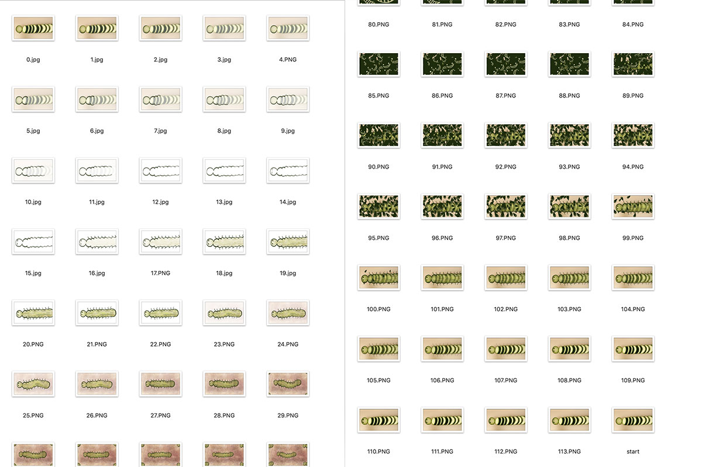

Week 1: Cucumber Daydream
For first week's stop motion animation project, I worked with Jenny and Adi on creating an animation called Cucumber Daydream. We wanted to depict how one's mind daydreams while doing a repetitive & simple task. For the repetitive task, we chose the taks of cutting vegetables, specifically a cucumber.
We wanted to mix different styles of stop motion for the two different instances of the daydream. For the real action part and the first daydream, we wanted to create stop motion animation using a camera and the Stop Motion Studio Pro software.
For the second daydream, I wanted to explore more of a "classical" form of animation through series of drawings. Using Procreate, I drew about 113 different images to import into Stop Motion Studio Pro to render as an animation.
After we had all the content of the video done, Jenny color corrected the whole video and Adi added the sound. Here is the final video: